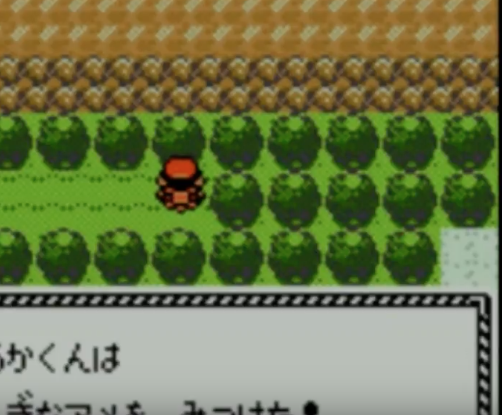

<!DOCTYPE html>
<html lang="ja">
  <head>
    <link rel="stylesheet" href="./css/sample.css" type="text/css">

    <div class=main_chart>
    <title>ワニノコチャート</title>
    <meta charset="UTF-8">
    <h1 align="center">ワニノコ用チャート解説</h1>
    <h2 align="right"></h2>
  </head>
  <A href="index.html">トップページ</A><br>
  <br>
  <body>
    <span class=sample4 >はじめに</span><br>
    ・「＊」印はトレーナー戦、「＠」はショップでの売買について。それ以外は基本的に「・」印。<br>
    ・ポケモンの捕獲は基本的に「メイン」のみ対象。<br>
    ・「ボール」の購入についても基本的には「サブ」では必要ないが、一部捕獲する必要があるため、適宜購入していく。<br>
    [メイン]3DSの時間は 「木曜日」の「13時00分」にする。<br>
    [サブ]3DSの時間は 「木曜日」の「7時00分」にする。<br>
    ・「せっていをかえる」で戦闘アニメ「見ない」話の速さ「はやい」に変更。<br>
    ・ゲーム内の時間を設定する。<br>
    [メイン]午後1時<br>
    [サブ]午前7時<br>
    <span class=sample4 >ワカバタウン</span><br>
    ・階段降りて曜日設定。<br>
    ・研究所で博士と話す。真ん中がワニノコ。<br>
    ・ワニノコからきのみ預かる。<br>
    <span class=sample4 >29番道路</span><br>
    ・オタチ(ポッポ)レベル3を1匹倒す。ひっかく連打<br>
    <span class=sample4 >ヨシノシティ</span><br>
    ・何もしない<br>
    <span class=sample4 >30番道路</span><br>
    ・ずっと上に進む。ポケモン爺さんの家の手前に見えない傷薬(任意)<br>
    ・図鑑とタマゴをもらう。自動で手持ち回復。<br>
    ・ヨシノシティに戻る。「きのみ」収穫。<br>
    <span class=sample4 >ヨシノシティ</span><br>
    ＊ライバル戦。ひっかく連打。負けそうなら傷薬。<br>
    <span class=sample4 >29番道路</span><br>
    ・そのままワカバタウンへ。<br>
    <span class=sample4 >ワカバタウン</span><br>
    ・研究所で話してボールもらって再び29番道路へ。<br>
    <span class=sample4 >29番道路</span><br>
    ・捕まえ方は教えてもらわない。<br>
    ・まだ7レベになってなければポッポ(オタチ)レベル3を倒す。<br>
    ・「オタチ」捕獲。サブでも捕まえる。<br>
    <span class=sample4 >ヨシノシティ</span><br>
    ＠傷薬5個、ボール5個購入。<br>
    ・そのまま30番道路へ。<br>
    <span class=sample4 >30番道路</span><br>
    ＊たんぱんアキラ　いかり連打<br>
    <span class=sample4 >31番道路</span><br>
    ・にがいきのみ収穫<br>
    [メイン]「マダツボミ」捕獲<br>
    <span class=sample4 >キキョウシティ</span><br>
    ・即ジム。ジムでは必要に応じて傷薬、きのみ使用。<br>
    ◆サブ二周目(ヒノアラシ)はマダツボミの塔を攻略して「フラッシュ」入手する<br>
    [メイン]「マダツボミ」が取れていれば「イワーク」と交換してからでもOK<br>
    <span class=sample4 >キキョウジム</span><br>
    ＊とりつかいショウタ　いかり連打<br>
    ＊とりつかいツバサ　いかり連打<br>
    (・ハヤトの前に「きのみ」をワニノコに持たせる)<br>
    ＊ジムリーダーハヤト　いかり連打<br>
    <span class=sample4 >キキョウシティ</span><br>
    ・ジム戦後ポケモンセンター(以下PC)で回復、タマゴ受け取る。<br>
    ＠「どろかけ」売却、プラスパワー4購入<br>
    ・32番道路に向かう途中でまひなおしのみ収穫。<br>
    <span class=sample4 >32番道路</span><br>
    ＊たんぱんシンゴ　ひっかく連打<br>
    [メイン]「メリープ」「ハネッコ」捕獲<br>
    ・橋を渡るルートで進む。<br>
    ＊つりびとヤスアキ　にらみつける1、ひっかく連打<br>
    ・そこから先は全避け <font color="red">決してポケセンには入らないこと</font><br>
    <span class=sample4 >つながりのどうくつ</span><br>
    ・「ズバット」捕獲<br>
    ＊やまおとこユウゴ　みずでっぽう<br>
    ＊やまおとこダイサク　みずでっぽう連打<br>
    ＊ひふきやろうノリヤス　みずでっぽう<br>
    <span class=sample4 >33番道路</span><br>
    ＊やまおとこツトム　みずでっぽう連打<br>
    ・戦闘後、必ずアドレスを登録する。これ以降「ノコッチ」が大量発生したら「つながりのどうくつ(キキョウシティ側)」に向かうこと<br>
    <span class=sample4 >ヒワダタウン</span><br>
    ・ガンテツの家(左上)に行ってガンテツと話す。<br>
    ＠傷薬4 いい傷薬5 スプレー4　どくけし2購入<br>
    ・ヤドンの井戸へ。(井戸の入り口の上になんでもなおし)<br>
    <span class=sample4 >ヤドンの井戸</span><br>
    ・スプレーつかう<br>
    ＊したっぱ男　みずでっぽう連打<br>
    ・ワニノコに「にがいきのみ」持たせておく<br>
    ＊したっぱ女　みずでっぽう連打<br>
    ・ワニノコが「にがいきのみ」消費してたら「きのみ」持たせる<br>
    ＊したっぱ男　みずでっぽう連打<br>
    ＊したっぱ男　みずでっぽう連打<br>
    ・ガンテツワープ、即ジムへ<br>
    <span class=sample4 >ヒワダジム</span><br>
    ＊ふたごちゃん<br>
    　レディバ　ひっかく連打<br>
    　イトマル　みずでっぽう<br>
    ＊むしとりトモミチ(左)<br>
    　パラス　にらみつける　ひっかく連打<br>
    ・ツクシ戦前に必ず「きのみ」持たせておく。レポート。<br>
    ＊ジムリーダーツクシ<br>
    　トランセル　いかり連打<br>
    　コクーン　いかり連打<br>
    　ストライク　いかり連打<br>
    (遅くともここでアリゲイツに進化する)<br>
    <span class=sample4 >ヒワダタウン</span><br>
    ・傷薬で回復。<font color="red">決してポケセンには入らないこと</font><br>
    ・街の左に進むとライバル戦になるので、その前に必ずレポート<br>
    ＊ライバル
    　ゴース　みずでっぽう1、プラパ4、状態回復、みずでっぽう<br>
    　ベイリーフ　ひっかく2<br>
    　ズバット　ひっかく<br>
    <span class=sample4 >ウバメのもり</span><br>
    ・スプレーつかう<br>
    ・カモネギ追いかける(下,下,右,上,上,右の向きから順に話しかける)<br>
    ・「いあいぎり」を「オタチ」等につかう<br>
    ・技マシン「ずつき」もらう、アリゲイツに教える(ひっかく消す)<br>
    [サブ]適当な木に「ずつき」をして「クヌギダマ」を捕獲する。(出やすい木と出にくい木があるので移動しながら推奨)<br>
    <span class=sample4 >34番道路</span><br>
    ・トレーナー全避け<br>
    <span class=sample4 >コガネシティ</span><br>
    ・<font color="red">決してポケセンには入らないこと</font><br>
    ・どうしても回復したいときはラジオ塔のパソコンを使う<br>
    ・右奥にある自転車屋で自転車入手、自転車を登録。<br>
    <span class=sample4 >コガネジム</span><br>
    ・ジムは時計回りに攻略する<br>
    ＊ミニスカートミカ<br>
    　ブルー　ずつき連打<br>
    ・次のトレーナーは左通ると避けれる<br>
    ・レポート推奨<br>
    ＊ジムリーダーアカネ<br>
    　ピッピ　いかり連打。おうふくビンタされたらほぼ勝ち確定。<br>
    　ミルタンク　いかり連打。<br>
    ・「かみつく」覚えたら「にらみつける」消す。この時点で技構成は「ずつき」「かみつく」「いかり」「みずでっぽう」<br>
    <span class=sample4 >コガネシティ</span><br>
    ・ジム右の家でジョウロもらう<br>
    ・上のゲートでオニスズメもらう<br>
    ・北西の入り口から地下通路に入る<br>
    ＊かいじゅうマニア　かみつく連打<br>
    ＊りかけいのおとこ　コイルはみずでっぽう、ビリリダマはずつき<br>
    ・コインケース回収<br>
    ・ゲームコーナーでコイン200枚購入、ケーシィを買う。<br>
    ＠デパート
    　[3F]メロメロ、れんぞくぎり売却、スピーダー1(メインは2),スペシャルアップ1(メインは2),プラスパワー2購入<br>
    　[2F下]あなぬけのヒモ3、なんでもなおし3、スパボ5<br>
    　[2F上]いい傷薬3<br>
    ・デパート出たらケーシィの「テレポート」でキキョウシティに飛びそのまま36番道路へ。<br>
    <span class=sample4 >36番道路</span><br>
    [サブ]ウソッキー捕獲<br>
    <span class=sample4 >35番道路</span><br>
    ・適当にトレーナー倒しつつ下の方のいあいぎりした先にいる「むしとりしょうねんのヨウタ」と戦う。<br>
    ・戦闘終了後、彼のアドレスを登録。これ以降「ヤンヤンマ」大量発生の連絡が来たら35番道路へすぐ向かうこと。<br>
    ・36番道路に戻り、そのまま37番道路へ。<br>
    <span class=sample4 >37番道路</span><br>
    ＊サイキッカーリョウ　ずつき連打<br>
    [メインorサブ]オドシシ捕獲<br>
    <span class=sample4 >エンジュシティ</span><br>
    ・ポケセン使う。マサキと話す。<br>
    ・メインのみ、舞妓5連戦に挑む。<br>
    ＊まいこ左から1　ブースター　みずでっぽう連打<br>
    ＊まいこ左から2　エーフィ　かみつく連打<br>
    ＊まいこ左から3　ブラッキー　ずつき連打<br>
    ＊まいこ左から4　シャワーズ　ずつき連打<br>
    ・しっかり回復＋まひなおしのみを持たせる<br>
    ＊まいこ左から5　サンダース　ずつき連打<br>
    ・「なみのり」もらってアリゲイツに使う(いかり消す)<br>
    ☆このタイミングで両ロムのアリゲイツを交換したい(エンジュジム後の方が良いかもしれない)<br>
    ☆オドシシ、ウソッキーなども可能なら送るように<br>
    <span class=sample4 >エンジュジム</span><br>
    ・進み方は図の通り。<br>
    <div align="center">  </img> </div><br>
    ＊ぼうず　かみつく連打<br>
    ＊ぼうず　かみつく連打<br>
    ・このバトルの後、右に進んで、イタコのいる前の列に着いたら真上に進む<br>
    ＊イタコ<br>
    　ゴース　なみのり<br>
    　ゴースト　かみつく、みずでっぽう<br>
    　ゴース　なみのり<br>
    ・マツバ戦前に必ず回復＋レポート、まひなおしのみ持たせる(あれば)<br>
    ＊ジムリーダーマツバ<br>
    　ゴース　スペシャルアップとスピーダー使ってから波乗り。初手呪いならリセもアリ<br>
    　ゴースト　なみのり<br>
    　ゲンガー　かみつく連打<br>
    　ゴースト　かみつく<br>
    <span class=sample4 >38番道路</span><br>
    ・出現すればミルタンクを捕獲する。出なければ後回し<br>
    ・道の真ん中上あたりにいるミニスカートのリカと戦闘、アドレス登録しておく<br>
    ・これ以降、「ブルー」大量発生の連絡が来たらすぐ38番道路に向かうこと<br>
    <span class=sample4 >アサギシティ</span><br>
    ＠いい傷薬5、シルバースプレー5、スーパーボール10購入、シャドーボール売却<br>
    ・ショップ横の家で「いいつりざお」もらう<br>
    ・ポケセンの左の建物にいるふなのりから「かいりき」もらってアリゲイツに使う(みずでっぽう消す)<br>
    ・この時点で技構成は「なみのり」「かいりき」「ずつき」「かみつく」<br>
    <span class=sample4 >アサギの灯台</span><br>
    ＊ジェントルマン<br>
    　ヨルノズク　ずつき波乗り<br>
    ＊ジェントルマン<br>
    　ガーディ×2　波乗り<br>
    ＊ミニスカート<br>
    　マリル　ずつきかみつく<br>
    ・穴に落ちるが、落ちる時は左側の穴に落ちること。ここから先は全避けできるが、オーダイルになっていなければ戦う。<br>
    ・ピーピーエイドひろう<br>
    ・最上階でミカンと話す。その後、右側にある穴から落ちて、ふしぎなアメ回収。<br>
    ・あなぬけのヒモ使う<br>
    <span class=sample4 >40~41番水道</span><br>
    ・波乗りしてスプレー使って進む。「マンタイン」は捕獲難易度が非常に高いので後回し。<br>
    <span class=sample4 >タンバシティ</span><br>
    [メイン]ツボツボもらう<br>
    ・薬屋で「ひでんのくすり」もらう<br>
    <span class=sample4 >タンバジム</span><br>
    ＊からておうキヨマサ　サワムラー　かいりき連打<br>
    ＊からておうフミヒト　エビワラー　かいりき連打<br>
    ＊からておうテッカン<br>
    　ワンリキー　なみのり<br>
    　ゴーリキー　かいりき連打<br>
    ＊からておうモリカズ<br>
    　マンキー×2　かいりき<br>
    　オコリザル　ずつき連打<br>
    ・回復しておく、「にがいきのみ」が残ってたら持たせる<br>
    ＊ジムリーダーシジマ<br>
    　オコリザル　プラスパワー2個使ってかいりき<br>
    　ニョロボン　ずつきかいりき<br>
    ・ジム戦終了後、ジム前の奥さんから「そらをとぶ」もらって「オニスズメ」に教えて「エンジュ」に飛び、
    チョウジタウン(右)に向かう。<br>
    <span class=sample4 >やけた塔(メインのみ)</span><br>
    ＊ライバル<br>
    　ゴースト　なみのり<br>
    　ズバット　なみのり<br>
    　コイル　なみのり<br>
    　ベイリーフ　かいりき<br>
    ・地下で「ブーバー」捕獲、ライコウたちに話しかける<br>
    <span class=sample4 >42番道路</span><br>
    ・通り抜けるだけ。スプレー推奨。<br>
    <span class=sample4 >チョウジタウン</span><br>
    ・上に抜ける<br>
    <span class=sample4 >43番道路</span><br>
    [メインorサブ]キリンリキ捕獲<br>
    [メイン]モココ捕獲<br>
    <span class=sample4 >いかりのみずうみ</span><br>
    ＊ギャラドス　かいりき連打<br>
    ・ふしぎなアメ(かいふくのくすりもついでに)回収<br>
    <div align="center">  </img> </div><br>
    ・ワタルと話してそらをとぶ、サブはチョウジタウンへ<br>
    ・キキョウに飛んで「学習装置」を「ポケモン爺さん」からもらう<br>
    ・メインはチコリータ、サブはメインから貰った育成用ポケモン(モココ？)に学習装置持たせてからチョウジタウンへ。<br>
    <span class=sample4 >チョウジタウン</span><br>
    ・アジトへ<br>
    <span class=sample4 >ロケット団アジト</span><br>
    ＊したっぱ2人　全部波乗り<br>
    ・途中で下に進んで研究員とバトル
    ＊けんきゅういん　波乗り連打<br>
    ・パソコンを調べてスイッチ切る<br>
    ・右側からぐるっと回って下に進む。階段を降りる<br>
    ＊したっぱ男　ずつき連打<br>
    ・階段降りる。上の部屋？に入る<br>
    ＊けんきゅういん　なみのり連打<br>
    ＊したっぱ女　かいりき連打<br>
    ・戦闘後再度話しかけてパスワードを聞く。部屋から出て左に進む。<br>
    ＊けんきゅういん　かいりき<br>
    ＊したっぱ男　かいりき<br>
    ・戦闘後再度話しかけてパスワードを聞く。部屋から出て上に進む。階段をのぼる。<br>
    ＊したっぱ男　かいりき連打<br>
    ・階段降りる<br>
    ＊幹部<br>
    　ズバットラッタ　かいりき<br>
    　ドガース　なみのり<br>
    ・ヤミカラスに必ず話しかけること<br>
    ・来た道を戻り、マルマインの部屋の前でバトル<br>
    ＊したっぱ<br>
    　アーボック　かみつくなみのり<br>
    　クサイハナ　ずつきかいりき<br>
    　ヤミカラス　なみのり<br>
    ・マルマイン軍団は上から順に倒す。全員なみのり。<br>
    ・ワタルに「うずしお」もらって「あなぬけのヒモ」で脱出<br>
    <span class=sample4 >チョウジジム</span><br>
    ・図の位置から滑って時計回りに進んでいくと対戦なしでジムリーダーまでいける(たまに見つかる)<br>
    <div align="center">  </img> </div><br>
    ＊ジムリーダーヤナギ<br>
    　パウワウ　かみつくかいりき<br>
    　ジュゴン　かいりきかいりき<br>
    　イノムー　なみのり<br>
    ・そらをとぶでアサギシティ、そのままアサギの灯台へ<br>
    ・アサギの灯台最上階で薬を渡す。渡したらあなぬけのヒモで脱出し、ジムへ。<br>
    <span class=sample4 >アサギジム</span><br>
    ＊ジムリーダーミカン　なみのり連打<br>
    ・そらをとぶでコガネシティへ<br>
    <span class=sample4 >コガネシティ</span><br>
    ・ポケセンで回復<br>
    ＠デパート
    　[売る]アイアンテール、こごえるかぜ、ばくれつパンチ<br>
    　[3F]スピーダー3,スペシャルアップ12(メイン14),プラスパワー12,エフェクトガード2,ヨクアタール1個購入<br>
    　[2F下]あなぬけのヒモ3、スパボ15個(適当なので、所持金に合わせてもう少し買っても良い)<br>
    　[4F]技マシン33(冷凍パンチ)、技マシン02(ずつき、メインのみ)<br>
    ・ラジオ塔へ<br>
    <span class=sample4 >ラジオ塔</span><br>
    ＊したっぱ<br>
    　ラッタ×2　かいりき連打<br>
    ・二階は下から回り、手前の二人を避ける<br>
    ＊したっぱ<br>
    　ズバット×2　ずつき連打<br>
    ＊したっぱ<br>
    　ベトベター×2＋ベトベトン　ずつき連打<br>
    ・三階は下を向いているロケット団員は下の机で避けることができる<br>
    　ドガース　かいりき<br>
    　ベトベター　ずつき<br>
    　ズバット　ずつき<br>
    　コラッタ　ずつき<br>
    ＊けんきゅういん<br>
    　コイル×3　なみのり連打<br>
    ・四階は回っているロケット団員に注意
    ＊けんきゅういん<br>
    　ポリゴン　ずつき連打(テクスチャー2を使われたらなみのり)<br>
    ＊幹部<br>
    　ドガース×5　なみのり<br>
    　マタドガス　ずつきなみのり<br>
    ・ラジオ塔を出て地下通路に進む。回復。<br>
    <span class=sample4 >コガネシティ地下</span><br>
    ・「れいとうパンチ」教える(かみつく消す)。レポート書く。<br>
    ＊ライバル<br>
    　ゴルバット　冷凍パンチ<br>
    　コイル　なみのり<br>
    　メガニウム　スペシャルアップ、冷凍パンチ<br>
    　ゴースト　冷凍パンチ<br>
    　ニューラ　なみのり<br>
    ＊したっぱ<br>
    　コラッタ　かいりき<br>
    ＊したっぱ<br>
    　ベトベトン　なみのり<br>
    　ドガースコラッタ　かいりき<br>
    ＊したっぱ　かいりき連打<br>
    ・スイッチは左から順に(1,2,3の順)押していく。下向きの道が開くのでその先に進む。<br>
    ＊かじばどろぼう1　かいりき連打<br>
    ＊かじばどろぼう2　かいりき連打<br>
    ＊したっぱ<br>
    　クサイハナ×2　かいりき連打<br>
    ・扉の先に進む<br>
    ＊したっぱ<br>
    　ラッタゴルバット　かいりき連打<br>
    ＊したっぱ<br>
    　ベトベター　かいりき<br>
    　マタドガス　なみのり<br>
    ＊したっぱ<br>
    　ドガース×2　かいりき連打<br>
    ・局長からカードキーもらう。<br>
    ・救出後、右上の階段を登る。図を参考に。<br>
    <div align="center">  </img>  </img> </div>
    ・おまもりこばん入手後、オーダイルに持たせる。これ以降基本的にはおまもりこばん。<br>
    ・あなぬけのヒモを使用、再びラジオ塔へ<br>
    ・もし波乗りのPPが少なければピーピーエイド使う<br>
    <span class=sample4 >ラジオ塔</span><br>
    ・途中の階の右側をカードキーで開けて進む<br>
    ＊したっぱ<br>
    　ラッタドガース　なみのり連打<br>
    ＊幹部<br>
    　ゴルバット　れいとうパンチ<br>
    ＊幹部<br>
    　アーボック　なみのり<br>
    　ラフレシア　れいとうパンチ<br>
    　ヤミカラス　れいとうパンチ<br>
    ＊幹部<br>
    　デルビル　なみのり<br>
    　ドガース　なみのり<br>
    　ヘルガー　なみのり<br>
    ・「にじいろのはね(ぎんいろのはね)」もらう<br>
    ・1階下のフロアで「ピンクのリボン」もらう<br>
    ・1Fの受付でラジオカードもらう(クイズの答えは◯◯×◯×)<br>
    ・チョウジタウンに飛び回復、右に進む<br>
    [メイン]手持ち「オーダイル」「トゲピー」「オニスズメ」「ベイリーフ」「クヌギダマ」？<br>
    <span class=sample4 >44番道路</span><br>
    [メイン]水上でニョロゾを捕獲(最悪24以上のニョロモでも良い)<br>
    ＊とりつかいモトヒロ　かいりき連打<br>
    <span class=sample4 >氷の抜け道</span><br>
    ・「とけないこおり」がどこかに落ちてるはずなので拾う(最悪拾えなくてもどうにかなる)<br>
    [サブ]デリバード、ウリムー(B3Fで25レベが理想だがデリバ捕獲済みなら23でも妥協)捕獲<br>
    [メイン]ルージュラ捕獲<br>
    ・大きなフロアでは「上、左、上、右、上、右、下、左、上、左、下、右、下、右、上、右」の順に進む<br>
    ・大きなフロア抜けたら必ず「たきのぼり」の秘伝マシンを入手！<br>
    ・階段の先ではかいりきを使う。図を参考に。<br>
    <div align="center">  </img>  </img> </div>
    <div align="center"> ここ(左図)から石を落として→ここ(右図)から飛び降りる</div><br>
    ・飛び降りたら上、右の順に進む<br>
    ・後は道なりに進めばフスベシティに着くはず<br>
    <span class=sample4 >フスベシティ</span><br>
    ・ジムに直行する前に45番道路でやまおとこのタロウを倒し、アドレス登録。<br>
    ・これ以降、「マリル」大量発生の連絡が来たらすぐ「スリバチやま」に向かうこと<br>
    <span class=sample4 >フスベジム</span><br>
    ＊エリートトレーナーマサル<br>
    　ミニリュウ×3　かいりき連打<br>
    ＊エリートトレーナートモエ<br>
    　シードラ　かいりき連打<br>
    ・石を穴から落とす<br>
    ＊エリートトレーナートモヒコ<br>
    　タッツーシードラ　かいりき連打<br>
    ・石を穴から落とす<br>
    ・「とけないこおり」を持たせる<br>
    ＊エリートトレーナー<br>
    　ミニリュウ　かいりき<br>
    　ハクリュー　冷凍パンチ<br>
    ＊ジムリーダーイブキ<br>
    　ハクリュー×3　冷凍パンチ<br>
    　キングドラ　かいりき連打<br>
    [メイン]ニョロゾに「うずしお」「たきのぼり」教える<br>
    [サブ]オーダイルに「うずしお」教える(冷凍パンチ消す)<br>
    ・りゅうのあなへ入り、一番奥のりゅうのキバを回収。<br>
    ・あなぬけのヒモ使い、空を飛ぶでワカバタウンへ。<br>
    ・ウツギ博士から「マスターボール」もらう。サブ1周目はこれ以上ストーリーは進めずにタスクをいくつか片付けた後、リセット。27番道路のアメは拾う。<br>
    ☆送るアイテム：マスボ、ふしぎなアメ3個、(学習装置)<br>
    ☆送るポケモン：メタモン、デンリュウ、デリバード、ウリムー、オドシシ等<br>
    [サブ]タスクページは<A href="sub_chart.html">こちら</A><br>
    [メイン]波乗りしてカントーへ<br>
    <span class=sample4 >27~26番道路</span><br>
    ・ふしぎなアメ拾う(図はイメージ)<br>
    <div align="center">  </img> </div>
    ・「ピンクのリボン」持たせる<br>
    ＊エリートトレーナーヒデユキ<br>
    　レアコイル　なみのり<br>
    　タマタマ　かいりき<br>
    　ヌオー　なみのり<br>
    ・橋の上のトレーナーは波乗りして避ける<br>
    ＊サイキッカージン<br>
    　エーフィ　かいりき<br>
    ・民家に入って回復。出てすぐのエリートトレーナー(女)は避ける。<br>
    ＊エリートトレーナーシュン<br>
    　ウツボット　かいりき連打<br>
    　キングラー　かいりき連打<br>
    　ブースター　なみのり<br>
    ＊エリートトレーナーユウキ<br>
    　パラセクト　冷凍パンチ<br>
    　ゴルダック　かいりき<br>
    ＊エリートトレーナーヒトミ<br>
    　ギャロップ　なみのり<br>
    <span class=sample4 >チャンピオンロード</span><br>
    [メイン]ドンファン捕獲<br>
    [サブ]リングマ捕獲<br>
    [1F]まず右上に進み「技マシン26」を回収する。その後、左上のハシゴを目指す<br>
    [2F]道なりに進みハシゴ登る<br>
    [3F]高台には登らず、ぐるっと右から回り込むと出口前でライバル。レポート書くこと。<br>
    ＊ライバル<br>
    　ニューラ　かいりき<br>
    　レアコイル　なみのり<br>
    　メガニウム　かいりき連打(とけないこおり持ち冷凍パンチでもいけるかも)<br>
    　ゴルバット　冷凍パンチ<br>
    　ゴースト　なみのり<br>
    　ユンゲラー　かいりき<br>
    <span class=sample4 >セキエイこうげん(四天王)</span><br>
    ＠ゴールドスプレー10、かいふくのくすり9、げんきのかけら3購入<br>
    ・必ずレポート書いておくこと。<br>
    <br>
    【イツキ】<br>
    ネイティオLv40　スペシャルアップ1つ使用→れいとうパンチ<br>
    ナッシーLv41　れいとうパンチ<br>
    ルージュラLv41　かいりき<br>
    ヤドランLv41　かいりき3<br>
    ネイティオLv42　れいとうパンチ<br>
    <br>
    【キョウ】<br>
    アリアドスLv40　スペシャルアップ1つ、ヨクアタール1つ使用→なみのり<br>
    モルフォンLv41　なみのり<br>
    フォレトスLv43　なみのり<br>
    ベトベトンLv42　なみのり　かいりき<br>
    クロバットLv44　れいとうパンチ<br>
    <br>
    【シバ】<br>
    カポエラーLv42　プラスパワー3つ使用→かいりき<br>
    エビワラーLv42　かいりき<br>
    サワムラーLv42　かいりき<br>
    カイリキーLv46　かいりき<br>
    イワークLv43　なみのり<br>
    <br>
    【カリン】<br>
    ブラッキーLv42　エフェクトガード、スペシャルアップ2つ使用→かいりき→なみのり<br>
    ラフレシアLv42　れいとうパンチ<br>
    ゲンガーLv45　なみのり<br>
    ヤミカラスLv44　なみのり<br>
    ヘルガーLv47　なみのり<br>
    <br>
    【ワタル】<br>
    ギャラドスLv44　かいりき連打<br>
    カイリューLv47　れいとうパンチ<br>
    カイリューLv47　れいとうパンチ<br>
    カイリューLv50　れいとうパンチ<br>
    プテラLv46　なみのり<br>
    リザードンLv46　なみのり<br>
    <br>
    ☆殿堂入り。レポートされたら(電源を切らないでくださいが終わったら)すぐリセットしてOK。<br>
    <br>
    <span class=sample4 >ワカバタウン</span><br>
    ・研究所でチケットもらう<br>
    ・アサギシティにそらをとぶ<br>
    <span class=sample4 >アサギシティ</span><br>
    ・船乗り場に行く。船に乗る。<br>
    <span class=sample4 >アクア号</span><br>
    ・右のほうにある階段を降りて船乗りと話す。<br>
    ・階段のぼって、最初のフロアへ。最初のフロアの左から2番目の部屋の船乗りを倒す<br>
    ＊ふなのり　かいりき、なみのり、かいりき<br>
    ・再び階段を降りて先に進む。一番奥の階段を登り船長室で女の子と話す。<br>
    ・「メタルコート」もらう。クチバシティに到着。船を降りる。<br>
    ・「そらをとぶ」でクチバシティへ。<br>
    <span class=sample4 >クチバシティ</span><br>
    ＠ハイパーボール20個ぐらい購入しておく、いらない技マシンとか売る。<br>
    ・まっすぐ上に進んでヤマブキシティを通り抜けてハナダシティへ。<br>
    <span class=sample4 >ハナダシティ</span><br>
    ・右にすすんで9番道路へ。<br>
    <span class=sample4 >9番道路</span><br>
    ・たくさんトレーナーいるけど多分余裕。なぎ倒しながら10番道路へ。<br>
    <span class=sample4 >10番道路</span><br>
    (・エレブー捕獲。昼ならやや出やすい。)<br>
    ・ポケモンセンターで回復。<br>
    ・手持ちは「オーダイル」「トゲピー」「オタチ(いあいぎり要員。メガニウムでもいい)」「オニスズメ」＋育成用ポケモン<br>
    ・波乗りして発電所に向かう。所長(一番奥にいるデブ)と話をする。<br>
    ・ヤマブキシティに飛び、そのまま左(タマムシシティ)へ。<br>
    <span class=sample4 >タマムシシティ</span><br>
    ・ジム直行(街の下側。いあいぎり必要。)<br>
    <span class=sample4 >タマムシジム</span><br>
    ＊ふたごちゃん<br>
    　ウツボットLv35　かいりき<br>
    　ラフレシアLv35　かいりき<br>
    ＊ピクニックガール(左の子だけ)<br>
    　ナッシーLv37　れいとうパンチ<br>
    ＊おとなのおねえさん<br>
    　パラスLv32　かいりき<br>
    　タマタマLv32　かいりき<br>
    　パラセクトLv35　かいりき<br>
    ＊ジムリーダーエリカ<br>
    　モンジャラLv42　冷凍パンチ<br>
    　ワタッコLv41　冷凍パンチ<br>
    　ウツボットLv46　スペシャルアップ、冷凍パンチ<br>
    　キレイハナLv46　冷凍パンチ<br>
    ・まず空を飛ぶでタマムシシティへ。<br>
    ・<font color="red">決してポケセンには入らないこと</font><br>
    ・セキチクシティへ向かう(街の左側)<br>
    <span class=sample4 >16~18番道路</span><br>
    ・17番道路(直線の部分)「マグマッグ」捕獲。<br>
    ☆一番右の道を降りることで基本的にトレーナーは避けられるはず<br>
    ・図の位置でピーピーマックスを回収する。<br>
    <div align="center">  </img> </div>
    ＊とりつかい　ヨルノズク　かいりき連打<br>
    <span class=sample4 >セキチクシティ</span><br>
    ・ジム直行(街の下側)。<font color="red">決してポケセンには入らないこと</font><br>
    <span class=sample4 >セキチクジム</span><br>
    ・右からぐるっと反時計回りに進むと「左下」にいるジムリーダーに会える<br>
    ＊ジムリーダーアンズ<br>
    　クロバットLv36　なみのり<br>
    　アリアドスLv33　なみのり<br>
    　マタドガスLv36　なみのり<br>
    　マタドガスLv36　なみのり<br>
    　モルフォンLv39　なみのり<br>
    ☆この時点で手持ちに25レベがいれば14番道路(右)にいってラッキーポポッコ捕獲しても良い。いあいぎり必須。<br>
    ・そらをとぶでヤマブキシティへ<br>
    <span class=sample4 >ヤマブキシティ</span><br>
    ・ジム直行(街の上側)。<font color="red">決してポケセンには入らないこと</font><br>
    <span class=sample4 >ヤマブキジム</span><br>
    ・ワープパネル、上、下、下、左の順<br>
    ＊ジムリーダーナツメ<br>
    　エーフィLv46　かいりき<br>
    　バリヤードLv46　かいりき<br>
    　フーディンLv48　かいりき<br>
    ・そらをとぶでハナダシティへ<br>
    <span class=sample4 >ハナダシティ</span><br>
    ・ハナダジムに入るとイベント<br>
    ・ハナダの北(24番道路)に向かう<br>
    <span class=sample4 >24番道路</span><br>
    ＊じゅくがえり<br>
    　ナゾノクサLv34　冷凍パンチ<br>
    ＊ミニスカート<br>
    　プクリンLv30　なみのり<br>
    　グランブルLv34　なみのり<br>
    ＊じゅくがえり<br>
    　モンジャラLv33　冷凍パンチ<br>
    　シャワーズLv33　かいりき<br>
    ＊ミニスカート<br>
    　クサイハナLv28　冷凍パンチ<br>
    　キレイハナLv31　冷凍パンチ<br>
    　ピジョンLv31　冷凍パンチ<br>
    ＊キャンプボーイ<br>
    　ニドキングLv34　なみのり<br>
    ＊ミニスカート<br>
    　パラスLv29　冷凍パンチ<br>
    　パラスLv29　冷凍パンチ<br>
    　パラセクトLv32　冷凍パンチ<br>
    ＊りかけいのおとこ<br>
    　ポリゴンLv36　なみのり<br>
    ・イベント発生後、そらをとぶでハナダシティへ、ジム直行<br>
    <span class=sample4 >ハナダジム</span><br>
    ・外周を右から回って　カスミは右から話しかける<br>
    ＊ジムリーダーカスミ<br>
    　ゴルダックLv42　プラスパワー1つ使用→かいりき10<br>
    　ヌオーLv42　なみのり<br>
    　ラプラスLv44　かいりき<br>
    　スターミーLv47　かいりき<br>
    ・勝利後、きかいのぶひんを回収(図を参考)<br>
    <div align="center">  </img> </div>
    ・ジムを出て、街の右(9,10番道路方面)に進み、発電所へ向かう<br>
    ・発電所で所長に部品を渡したら、ヤマブキシティに飛ぶ。<br>
    <span class=sample4 >ヤマブキシティ</span><br>
    ・街の右に進んでシオンタウンへ。<br>
    <span class=sample4 >シオンタウン</span><br>
    ・ラジオ塔で局長(1Fの上の方にいるジェントルマン)に話しかけてポケギアをアップグレードしてもらう<br>
    ・クチバシティに飛ぶ<br>
    <span class=sample4 >クチバシティ</span><br>
    ・ジムへ<br>
    <span class=sample4 >クチバジム</span><br>
    ・右側から進みジェントルマンとだけ戦う<br>
    ＊ジェントルマン<br>
    　ピカチュウ　かいりき<br>
    　モココ　かいりき<br>
    ＊ジムリーダーマチス<br>
    　ライチュウLv44　なみのり<br>
    　レアコイルLv40　なみのり<br>
    　エレブーLv46　なみのり<br>
    　マルマインLv40　なみのり<br>
    　マルマインLv40　なみのり<br>
    ・ジムを出たら、ポケギアでポケモンの笛を流す(一番右の方のチャンネル)<br>
    ・ディグダのあなの前にいるカビゴンに話しかける　そして逃げる<br>
    ・ディグダのあなを通ってニビシティへ(スプレー忘れずに)<br>
    <span class=sample4 >ニビシティ</span><br>
    ・ジム直行<br>
    <span class=sample4 >ニビジム</span><br>
    ＊キャンプボーイ<br>
    　サンドパンLv37　れいとうパンチ<br>
    ＊ジムリーダータケシ<br>
    　ゴローンLv41　れいとうパンチ<br>
    　カブトプスLv42　なみのり<br>
    　オムスターLv42　なみのり<br>
    　サイホーンLv41　れいとうパンチ<br>
    　イワークLv44　れいとうパンチ<br>
    ・道なりに下に進み、トキワシティ、マサラタウンへ<br>
    <span class=sample4 >1番道路</span><br>
    ・通り抜けるだけ<br>
    <span class=sample4 >トキワシティ</span><br>
    ・通り抜けるだけ<br>
    <span class=sample4 >1番道路</span><br>
    [朝昼限定]5レベスプレー(トゲピーかズバット)で「オオタチ」捕獲<br>
    <span class=sample4 >マサラタウン</span><br>
    ・通り抜けるだけ<br>
    <span class=sample4 >21番水道</span><br>
    ・スプレーまいて左端を進む<br>
    <span class=sample4 >グレン島</span><br>
    ・グリーンと話をする<br>
    ・ふしぎなアメ回収<br>
    <div align="center">  </img> </div>
    <span class=sample4 >20番水道</span><br>
    ・右に進んでふたごじまへ<br>
    <span class=sample4 >ふたごじま</span><br>
    ＊ジムリーダーカツラ<br>
    　マグカルゴLv45　なみのり<br>
    　ブーバーLv45　　なみのり<br>
    　ギャロップLv50　なみのり<br>
    ・トキワシティに空を飛ぶ<br>
    <span class=sample4 >トキワシティ</span><br>
    ・ジムへ<br>
    <span class=sample4 >トキワジム</span><br>
    ・負けるかも。レポート。<br>
    ＊ジムリーダーグリーン<br>
    　ピジョットLv56　プラスパワー3、スピーダー1、かいりき<br>
    　ナッシーLv58　かいりき<br>
    　フーディンLv54　かいりき<br>
    　ギャラドスLv58　かいりき<br>
    　サイドンLv56　なみのり<br>
    　ウィンディLv58　なみのり<br>
    ・そらをとぶでマサラタウン<br>
    <span class=sample4 >マサラタウン</span><br>
    ・オーキド博士と話す(シロガネ山解禁)<br>
    ・トキワシティに飛ぶ<br>
    <span class=sample4 >トキワシティ</span><br>
    ・左に進み、シロガネやまへ<br>
    <span class=sample4 >シロガネやま(1F/真っ暗)</span><br>
    ・「ヨーギラス」を捕獲する<br>
    ・「ずつき」「じしん」を教えてサブに送る<br>
    ・ふしぎなアメ回収(右の方にいあいぎりしながら進んだ奧の植木)<br>
    <div align="center">  </img> </div>
    ＊＊これ以降はタスクをこなす<br>
    タスクページは<A href="sub_chart.html">こちら</A><br>

  </body>
</div class=main>
</html>
